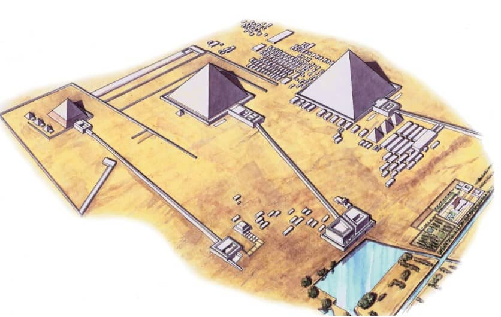
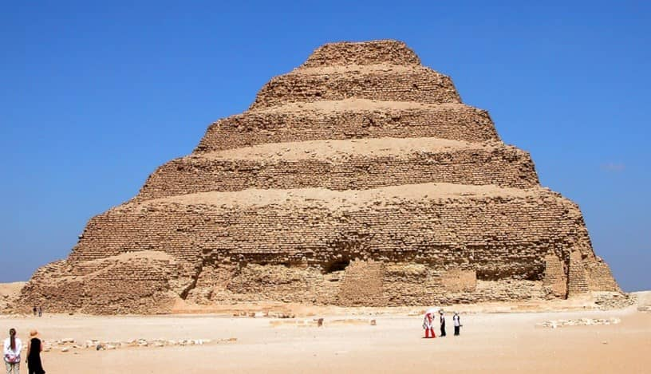
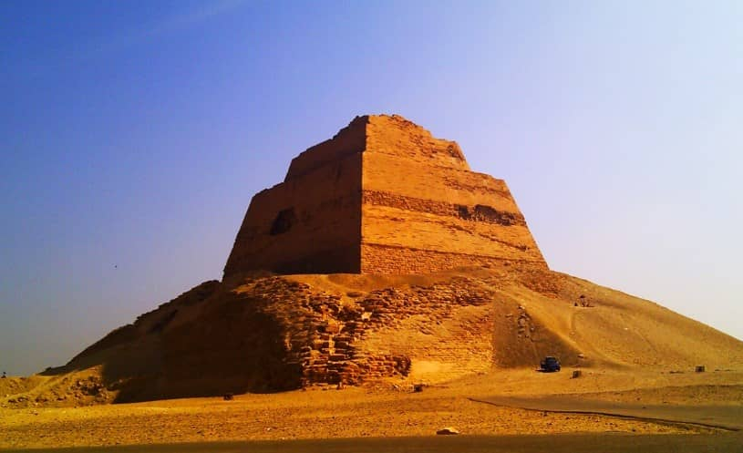
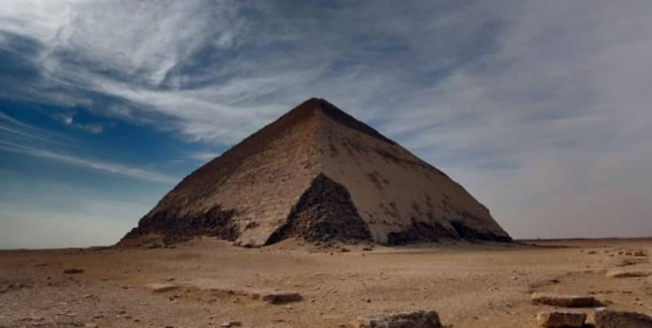
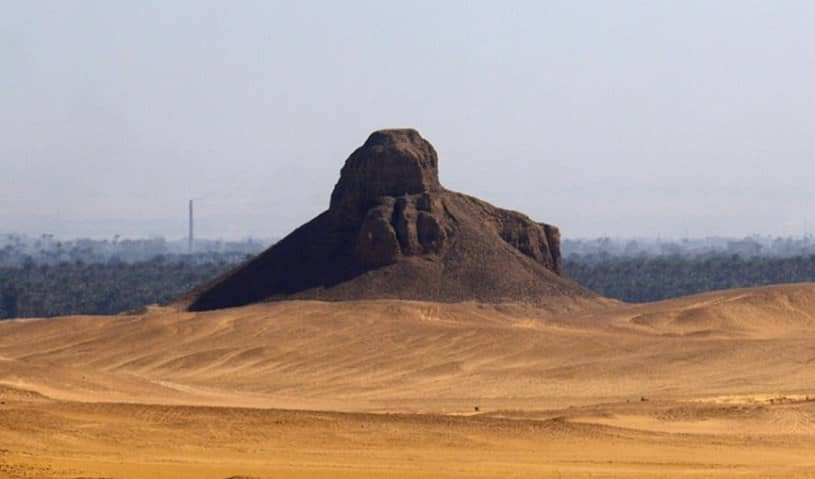
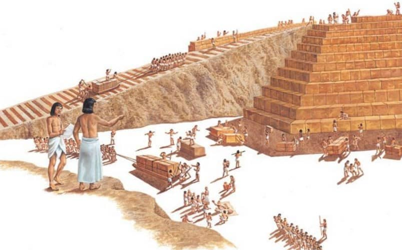
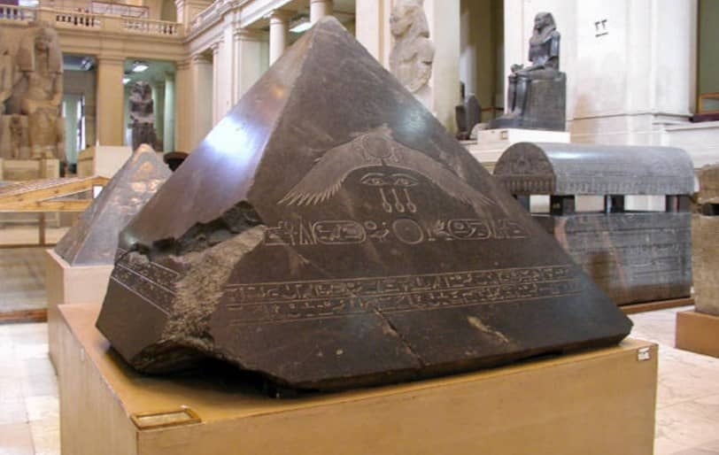
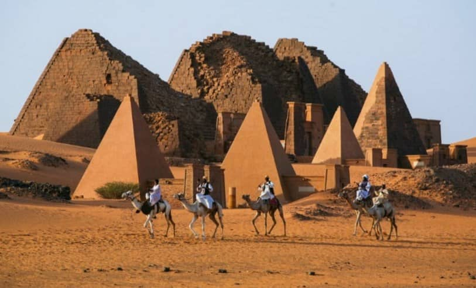

Як будували піраміди в Єгипті. Цікаві факти
Опубліковано: 31-01-2021

Найвідоміші піраміди знаходяться в Каїрі (є ще в Саккарі, Дахурі, Медумі), вони вважаються єдиними вцілілими серед давніх чудес світу. Тут була стародавня єгипетська столиця Мемфіс, і могутні царі Єгипту — фараони збудували величезні піраміди, які протягом двох тисячоліть були найвищими спорудами світу. Єгипетська цивілізація не знала заліза, з двигунів була тільки тяглова сила людей і тварин. Найбільшою загадкою цивілізації було те, як люди у давні часи змогли збудувати величезні споруди з блоків масою декілька тон.
Ці споруди були не просто великі — вони точно орієнтовані по сторонам світу, всередині прокладені ходи з пастками для грабіжників і з великими камерами. Імовірно, у стародавні часи вони були наповнені скарбами, але були пограбовані ще в стародавні часи.
Історія
Єгипетські піраміди — цікаві факти про історію будівнитцва. В Єгипті збереглося більше ста пірамід. Вони є різних різновидностей — ступінчаті, а також ступінчаті, перероблені під рівні піраміди, з ламаною поверхнею (кут нахилу змінювався у процесі будівництва). Археологи практично кожен рік знаходять нові піраміди — як невеликі, засипані піском, так і недобудовані і взагалі, які збереглися на рівні фундаменту.

Найдавніша піраміда належала фараону Джосеру і була споруджена біля 2650 року до нашої ери. До Джосера споруджували мастаби — прямокутники на один поверх. Джосер почав надбудовувати поверх за поверхом і получилася піраміда. Це була перша монументальна споруда в Єгипті з каменю — до цього будували переважно із сирцевої цегли. Цегла, навіть необпалена, зберігалася під відкритим небом добре, оскільки в цій країні практично ніколи не було дощів, особливо в областях, віддалених від Середземного моря.

Фараоном Снофру була збудована ступінчата піраміда в Медумі, її особливість — споруджена як ступінчата, але єгипетський цар наказав зробити стіни гладкими, заповнивши сходинки кам’яною кладко. Через деякий час камені, які заповнювали сходинки, впали, і в наш час ця споруда має ступінчастий вигляд. Після Снофру спорудження ступінчастих пірамід припинилося, вони були з гладкими стінами, облицьованими плитами.

У середньовічній Європі піраміди вважали коморами Йосипа, який назав складати у них зерно від врожайних років, щоб забезпечити сім голодних років, які у вигляді худої скотини приснилися фараону. Європейці не знали, що внутрішній простір споруд порожній приблино на один відсоток, тут не можна було нічого складати у великих кількостях.

В Дашхурі є «рожева» піраміда фараона Снофру (стіни у променях Сонця набувають рожевого кольору), її грані до половини висоти — під одним кутом, а потім кут нахилу стін зменшується, тому піраміду називають «ломаною».
Зміна нахилу граней могла бути зроблена з двох причин: або гробницю хотіли швидше добудувати, або нагрузка на підмурок стала надто великою і її хотіли зменшити шляхом зменшення кута будівництва стін. Також в Дахшурі є піраміда Аменемхета І, споруджена з сирцевої цегли, її називають «темною», очевидно через колір, який контрастував зі світлим вапняком і піщаником інших пірамід.

Піраміди оточувалися храмами, а також меншими пірамідами, які належали родичам фараона. Біля піраміди Хафра в Гізі знаходиться статуя сфінкса — лева з людською головою. Довжина сфінкса — 72 метра, висота — 20 метрів, що майже дорівнює висоті дев’ятиповерхового будинку.
Будівництво
Цікаві факти — єгипетські піраміди та особливості їх будівництва. У прихильників різних теорій заговору і надто задумливо-вразливих людей є версії, що піраміди мають зв’язок з позапланетними цивілізаціями, оскільки ніби-то люди не могли зі стародавніми технологіями збудувати такі великі споруди. Але все дуже просто — піраміди просто є рукотворними гробницями правителів. Такими великими їх робили з наступних причин:
* будували не раби, а вільні громадяни, таким чином вирішувалась проблема працевлаштування єгипетського чоловічого населення в період, коли Ніл розливався, і люди не могли займатися сільським господарством;
* вирішувалась проблема стабільності суспільства, оскільки працюючі люди не мали можливості влаштовувати бунти;
* соціальна функція — робітників добре годували і давали пиво, бідні таким чином могли прогодувати себе і свої сім’ї;
* інвестиції — багата держава не мала можливості інвестувати у щось важливе, крім грандіозних споруд;
* престиж — володарі сусідніх держав не могли спорудити нічого подібного, вони добре думали, перш ніж напасти на могутню державу, яка могла спорудити справжні гори, та ще повністю облицьовані плірованими плитами (зараз частина облицювання збереглася тільки біля вершини піраміди Хафра);
* збереження тіла фараона та скарбів, які були покладені біля нього — це вже функція єгипетської язичницької релігії, вона не настільки важлива, бо фараонів ховали і в глибоких гірских шахтах, не роблячи грандіозних споруд.

Особливості
Цікаві факти про піраміди — особливості. Всі піраміди у минулому виглядали інакше, ніж сьогодні. Вони були облицьовані вапняковими плитами, які сяяли на сонці. На вершині був гранітний пірамідон, який у давнину, можливо, був позолочений. Вигляд гробниць змінили місцеві жителі, які розтягнули на будівельний матеріал облицювання з рівних плит, також розтягуються і кам’яні блоки. Декілька пірамідонів були знайдені, вони зараз експонуються у Каїрському музеї.

Блоки пірамід дуже точно підігнані один до одного, між ними навіть після чотирьох тисяч років не вствиш кінчика ножа.
Споруди строго орієнтовані по сторонах світу. Під пірамідою зробили рівний фундамент. Сторони піраміди відрізняються по довжині лишень на 5 сантиметрів. Все це говорить про розвиток науки і будівельної техніки у стародавньому Єгипті.
Піраміда Хеопса має висоту 146 метрів, маса 2,3 мільйона кам’яних блоків складає понад 6 мільйонів тон.
На території Судану були нубійські царства. Місцеві царі, наслідуючи фараонів, почали споруджувати собі піраміди, причому вісім століть після останньої збудованої єгипетської гробниці пірамідальної форми.

Вони вирізняються більшим нахилом граней, меншою висотою (до 30 метрів) і видимим входом в гробницю, над яким був язичницький храм. У ХІХ столітті італійський дослідник Фелліні взірвав вершини 40 пірамід, щоб знайти скарбниці. Йому вдалося виявити тільки один тайник із золотом, ці ювелірні вироби він привіз до Європи, однак їх не захотіли у нього купувати, вважаючи підробкою.
Джерело: https://historyurok.com.ua/tsikavi-fakty/z-istorii/pro-yegipetski-piramidi.html